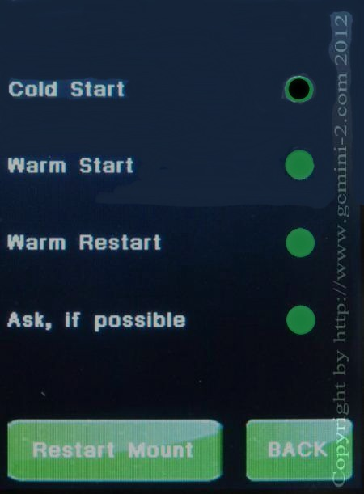

|
Gemini-2 and Gemini-1 Telescope Mount Controllers Website and Tutorials |
| Interactive Hand-Controller Menus - click on green button to Navigate |
|  |
This is where you can set the default startup mode. If you select "Ask, if Possible" then the Gemini-2 will prompt you for the startup mode, unless it determines a Cold Start is the only possible mode. Also by hitting the Restart mount button, the mount will be started from the beginning. How it starts will be determined by which mode was selected. For this demo, We have Ask, If possible selected, so if you press Restart mount, it will go to the startup menu. If Cold start is selected it will go to the Function menu, where PAA, Modeling or Catalog Tour can be selected. If Warm Start or Warm Restart is the selected mode, then it will go to the main menu. |